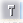
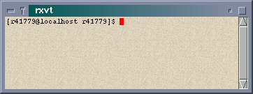
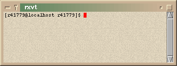
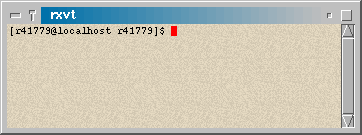

-

- Open Look Window Manager
- Motif Window Manager
- GNOME hints (partially)
- KDE Hints
- .xfwmrc
- system.xfwmrc
- sample.xfwmrc
XFce now features its own window manager ! light and efficient, just like XFce itself, XFwm is a powerfull window manager automatically configured from within XFce front panel !
1) Introduction
XFwm is based on FVWM2, from Robert Nation and Charles Hines. Historically, XFCE was designed to work with FVWM, so when I decided to create a Window Manager for XFCE, I started from FVWM... The code of FVWM has been deeply modified and made simpler, every unused feature has been removed and some bugs have been fixed.
Now, XFwm is available, and it is exactly like I wanted : Good looking,
light and efficient !
| XFwm now supports a wide variety of
hints from other Window Managers :
|

In XFwm, every window features a title bar and 4 little buttons beside the title bar.
Note : The gradient aspect of the the title bar is only
available if you use a color depth higher that 8 bit. 256 colors and lower
depths cannot display the gradient title bar.
| This button opens a little menu that provides basic window operations such as Move, Close Resize, Iconify, etc. Double clicking on this button will close the current window. | |
|  | This button acts like a switch. It sticks on unsticks the current window. A sticky window will remain on screen, even when you switch to another desktop. |
| This little button iconifies the current window. If the application provides its own icon, this icon will be used. If it doesn't, a default icon will be displayed. | |
| This button "maximizes" the current window. A maximized window will occupy the entire display. |
The "active" window is the one that has focus on. Other widows are considered as "inactive".
You can easily distinguish which window is active by looking at the
titlebar :
| Denotes the active window (with the default color panel) | |
| Denotes any other inactive window |
3) The color panels
The color schemes used in XFwm are the ones used for XFCE. Every time you change the colors in XFCE, all the windows will inherit the same color scheme.
This feature gives a very easy and intuitive way to configure your window manager at your taste without writing a single line of configuration file !
Select the configuration panel, and load or define your own color scheme.

| 1 | Color for the mouse pointer |
| 2 | Color for the selected item in XFwm menus |
| 4 | Color for the inactive window title |
| 7 | Color for the active window title |
| 8 | Color for the window border and menus |
Thanks to these parameters, you can easily change the look of the windows
in XFwm :
|  |  |
|  |  |
From Xfce's Control Panel, you can also define the focus mode, if you wish to click to focus windows or let focus follows the mouse cursor.
4) The configuration file for XFwm
XFwm is already preconfigured. Although, most parameters can be overridden by creating or editing your own configuration file.
The configuration file can be one of the following files :
XFwm accepts the following syntax in its configuration files :
| ActiveColor <c1> <c2> (*) | Define color for active windows | ActiveColor #c0c0c0 #ffffff |
| AddToFunc <fn> | Begins or add to a function definition | AddToFunc Move-or-Raise "I" Raise
+ "M" Move + "D" Lower |
| AddToMenu <mn> | Begins or adds to a menu definition | AddToMenu "Utilities"
+ "Xterm" Exec xterm -e tcsh |
| AnimateWin | Enable or disable window's animations | AnimateWin On
AnimateWin Off |
| AutoRaise (*) | Enable or disable autoraise of windows (when FocusMode is set to FollowMouse) | AutoRaise On
AutoRaise Off |
| Beep | Make the computer beep | Beep |
| ClickTime <ct> | Specifies the maximum delay (in milliseconds) between a button press and a button release | ClickTime 150 |
| Close | Close the current window | Close |
| ColormapFocus | Colormap is assigned to the window that has the focus | ColormapFocus |
| CursorColor <c1> <c2> (*) | Define mouse cursor colors | CursorColor red white |
| CursorMove <n1> <n2> | Moves the cursor of n1%of screen vertically and n2%of screen horizontally | CursorMove 10 10 |
| Delete | Sends a message to a window asking that it remove itself | Delete |
| Desk <d1> [<d2>] (*) | Change to another desk/workspace | Desk <0> |
| DesktopSize <Hor>x<Ver> | Defines the virtual desktop size in units of physical screen size. | DesktopSize 4x1 |
| Destroy | Destroys an application window | Destroy |
| DestroyFunc <fn> | Removes an uneeded function | DestroyFunc "Move-or-Raise" |
| DestroyMenu <mn> | Removes an uneeded menu | DestroyMenu "Utilities" |
| Echo <s> | Prints a string to stderr | Echo "Done" |
| Exec <c> | Executes a command | exec xedit |
| ExecUseSHELL <c> | Defines a shell as default for Exec | ExecUseSHELL bash |
| FlipFocus | Toggle focus between the last two focused windows | FlipFocus |
| Focus | Gives focus to a window | Focus |
| FocusMode (*) | Defines focus mode | FocusMode ClickToFocus
FocusMode FollowMouse |
| Function <fn> | Binds a function to a mouse or a key | Mouse 1 T A Function Move-or-Raise |
| GotoPage <x> <y> | Moves viewport to page (x,y) | GotoPage 3 2 |
| IconFont <font> | Defines font used to display icons | IconFont -*-helvetica-medium-r-*-*-12-*-*-*-*-*-*-* |
| Iconify | Iconify/Deiconify a window | Iconify |
| InactiveColor <c1> <c2> (*) | Defines colors for inactive windows | InactiveColors grey77 black |
| Key <key> <context> <modif> <fn> | Binds a keyboard key to a specified functions | Key F11 A SCM WindowList |
| KillModule <m> | Kills a module | KillModule xfce |
| Lower | Lowers a window | Lower |
| Maximize | Maximizes a window | Maximize |
| Menu <m> <dbl-click-action> | Displays menu <m> or triggers action if user performed a double click | Menu "Utilities" Close |
| MenuColor <c1> <c2> <c3> <c4> (*) | Defines colors for menus | MenuColor red blue yellow green |
| MenuFont <font> | Defines menu font | MenuFont
-*-helvetica-medium-r-*-*-12-*-*-*-*-*-*-* |
| Module <m> | Executes a module | Module xfce |
| ModulePath | Set Module path | ModulePath $PATH |
| Mouse <mouse> <context> <modif> <fn> | Binds a mouse button to a specified function | Mouse 1 R A Menu "Root" Nop |
| Move [<x> <y>] | Moves a window | Move |
| Nop | Does nothing | Nop |
| OpaqueMove (*) | If set, XFwm displays the contents of window during move | OpaqueMove On
OpaqueMove Off |
| PopUp | Popup a menu or a submenu | Popup "Quit" |
| Quit | Ends XFce | Quit |
| Raise | Raises a window | Raise |
| RaiseLower | Raises or lowers a window | RaiseLower |
| Recapture | Recapture all windows | Recapture |
| Refresh | Refreshes the screen | Refresh |
| Resize [<x> <y>] | Resizes a window | Resize |
| Restart | Restarts XFwm | Restart |
| Stick | Makes a window sticky | Stick |
| Style <win> <s1> [,<s2> [,<s3> [<s4>]...]] | Gives a style to one or several windows | Style "XFce*" Sticky |
| TitleStyle <type> Gradient <c1> <c2> (*)
TitleStyle <type> Solid <c> (*) |
Defines title bar style | TitleStyle Active Gradient blue grey77
TitleStyle Inactive Solid grey60 |
| Wait <name> | Waits until window <name> appears | Waiit xterm |
| WindowFont | Defines font for window titles | indowFont -*-helvetica-bold-r-*-*-12-*-*-*-*-*-*-* |
| WindowList | Gives a list a all windows displayed on screen | Windowlist |
| XORvalue <n> | Changes the value with which bits are XOR'ed when doing rubber-band window resizing |
Note : (*) denotes parameters overridden by XFce at startup
Modifiers are :
| N | No modifier |
| S | Shift |
| M | Meta |
| A | Any modifier |
| R | Root window |
| W | Application window |
| T | Title |
| S | Sides |
| F | Frame |
| I | Icon |
| 1-4 | Title bar buttons |
| A | Any context |
5) Default sample.xfwmrc file
MenuFont
-*-helvetica-medium-r-*-*-12-*-*-*-*-*-*-*
WindowFont
-*-helvetica-bold-r-*-*-12-*-*-*-*-*-*-*
IconFont
-*-helvetica-medium-r-*-*-12-*-*-*-*-*-*-*
CursorColor red
white
AnimateWin On
FocusMode ClickToFocus
Style "*"
DecorateTransient
Style "*"
BorderWidth 5
Style "XFce*" Sticky
Style "XFbd*" Sticky
Style "Popup menu*" Sticky
Style "Alert*" Sticky
Style "Question*" Sticky
AddToMenu "Exit"
+ "&Restart " Restart xfwm
+ "&Quit "
Quit
+ ""
Nop
+ "&Cancel " Nop
AddToMenu "Window"
+ "&Move"
Move
+ "&Resize"
Resize
+ "(De)&Iconify" Iconify
+ "(Un)&Stick" Stick
+ "(Un)Ma&ximize" Maximize 100 100
+ ""
Nop
+ "&Close"
Delete
+ ""
Nop
+ "S&witch to..." WindowList
AddToMenu "Root"
+ "New window" Exec xterm
+ "Shuffle Up" Next [*] focus
+ "Shuffle Down" Prev [*] focus
+ "Refresh" Refresh
+ ""
Nop
+ "&Backdrop..." Exec xfbd -i
+ ""
Nop
+ "&Quit XFWM" Popup "Exit"
# This defines the most common window operations
AddToFunc "windowops-or-die"
+ "M" PopUp "Window"
+ "C" PopUp "Window"
+ "D" Close
# But Cont Mod Function
Mouse 1 R A Menu "Root"
Nop
Mouse 2 R A Menu "Window"
Nop
# But Cont Mod Function
Mouse 0 1 A Function
"windowops-or-die"
Mouse 2 I A Menu "Window" Nop
Key Left A SC CursorMove -1
0
Key Right A SC CursorMove +1 +0
Key Up A SC CursorMove
+0 -1
Key Down A SC CursorMove +0 +1
Key Left A SM CursorMove -10 +0
Key Right A SM CursorMove +10 +0
Key Up A SM CursorMove
+0 -10
Key Down A SM CursorMove +0 +10
Key F1 A M Popup
"Window"
Key F2 A M Popup
"Root"
Key F3 A M Lower
Key F4 A M Destroy
Key F5 A M Next
[*] focus
Key F6 A M Prev
[*] focus
Key F7 A M Move
Key F8 A M Resize
Key F9 A M Iconify
Key F10 A M Maximize
Key L5 IW N RaiseLower
Key L5 IW S Lower
Key L5 IW C Raise
Key L7 IW A Iconify